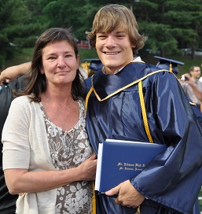
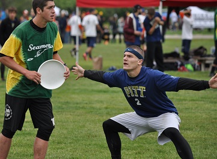
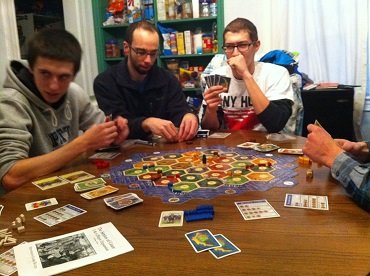

Pittsburgh Joe
A website about a young gentleman named Joseph Bender
Born October 7, 1992
Student
Joe is a student at the University of Pittsburgh.
He is an Information Science major in his third year.
Academics are a large part of his life, and enjoys studying and messing around in HTML!
Athlete
Joe is on the Pitt Ultimate Frisbee team.
They are a super committed group of guys and have been national champions two years running.
They practice and run track three days a week, and it helps Joe stay in shape.
Friend
Joe is a loyal friend.
He live in a house with 7 other people from his sports team and they all get along famously.
They like to watch movies, listen to music, and throw parties!